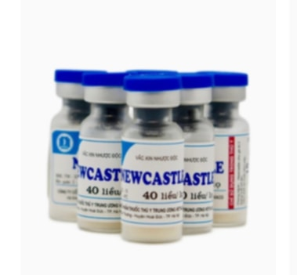
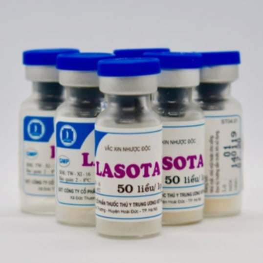
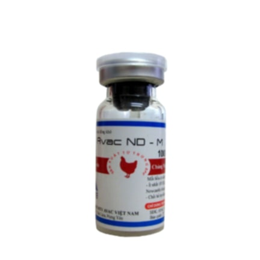

ພະຍາດນິວຄາເຊີນ
NEWCASTLE VIRUS

+ Newcastle ເປັນພະຍາດທີ່ຕິດຕໍ່ຮຸນແຮງໃນຫມູ່ສັດປີກ ຫລັກໆເລີຍແມ່ນໄກ່ ສາເຫດທີ່ເຮັດໃຫ້ເກີດພະຍາດນີ້ ເປັນຕົ້ນແມ່ນ ພູມຄຸ້ມກັນອ່ອນ ຫລື ສະພາບແວດລ້ອມແອອັດ ຄວາມຊື້ນຈາກຝົນຫລາຍເກີນໄປ ບໍ່ສະອາດ ດ້ວຍສະພາບແວດລ້ອມແບບນີ້ ມັນກໍເລີຍການເປັນແຫລ່ງກຳເນີດເຊື້ອໄດ້ດີ ແລະລະບາດໄດ້ຢ່າງງ່າຍດາຍ.
+ ອາການຫຼັກ : ຈຳພວກໄກ່ນ້ອຍ ມີອາການເຫງົາ ບໍ່ກິນອາຫານ ຫາຍໃຈຍາກເພາະມີນ້ຳມູກ, ນ້ຳລາຍອັ່ງຕາມປາກ ແລະ ລຳຄໍ ມັກຢືດຄໍຂື້ນເພື່ອຫາຍໃຈສະດວກ, ອາຈົມທຳອິດເປັນກ້ອນ ຕໍ່ມາເປັນນ້ຳສີຂາວມົ່ນ ຕາມຫາງຈະມີອາຈົມຕິດຢູ່ ຖ້າຕິດພະຍາດນີ້ໄປ2-3ມື້ ໄກ່ຈະຕາຍທັນທີ. ສ່ວນໄກ່ໃຫຍ່ ສ່ວນໃຫຍ່ ອາການຄ້າງຄືງກັນ ແຕ່ເປີເຊັນການຕາຍຂອງໄກ່ໃຫຍ່ທີ່ຕິດພະຍາດນີ້ ປະມານ 50% ສ່ວນໄກ່ທີ່ບໍ່ຕາຍກໍເປັນລ່ອຍ
ວັກຊີນປ້ອງກັນ Newcastle vassine
ແບບທີ1: ສຳຫຼັບໄກ່ນ້ອຍ (Newcastle F)
(ໄກ່ແລກເກີດ)
ມີລັກສະນະເປັນຜົງໃຊ້"ຢອດ"ກັບໄກ່ນ້ອຍທີ່ອາຍຸປະມານ 0-7 ມື້ ວັກຊີນນີ້ມີຄວາມຮຸນແຮງຕໍ່າ(ແບບອ່ອນໂຍນ)ດັ່ງນັ້ນຈື່ງເໝາະແກ່ການໃຫ້ສັດນ້ອຍ ໄລຍະຄຸ້ມກັນ : ໄກ່ນ້ອຍຈະຄຸ້ມກັນພະຍາດນິວຄາເຊີນໄດ້ຮອດອາຍຸ15ອາທິດ ແຕ່ເພື່ອເປັນການຮັບປະກັນ, ຫຼັງຈາກອາຍຸໄກ່ນີ້ໄດ້ 6-8 ອາທິດຈະຕ້ອງສັກຢາ ນິວຄາເຊີນອາຍຸແກ່ ຕື່ມອີກ.
ແບບທີ2: ສຳຫຼັບໄກ່ແກ່
(ທີ່ບໍ່ເຄີຍຮັບວັກຊີນແບບອ່ອນໂຍນມາກ່ອນ)
ເປັນວັກຊີນເຊື້ອຕາຍປະເພດຜົງ (ຍັງເປັນແບບອ່ອນໂຍນ) ໃຊ່້"ຢອດ"ກັັບໄກ່ອາຍຸ 6 ອາທິດຂື້ນໄປ ຫຼັງຈາກໃຫ້ຢານີ້ໄປ ປະມານສອງອາທິດ ກໍສາມາດໃຫ້ວັກຊີນ ແບບທີ3 ໄດ້
ແບບທີ3: ສຳຫຼັບໄກ່ແກ່ (Newcastle M)
(ທີ່ເຄີຍຮັບວັກຊີນແບບອ່ອນໂຍນມາກ່ອນ)
ມິລັກສະນະເປັນຜົງ (ແບບເຂັ້ມຂຸ້ນລະດັບປານກາງ )ໃຊ້"ສັກ"ໄກ້ກັບສັດທີ່ອາຍຸ 8 ອາທິດຂື້ນ, ຖ້າໃຊ້ກັບໄກ່ພັນໄຂ່ທີ່ກຳລັງໄຂ່, ໄຂ່ນັ້ນຈະຫຼຸດປະລິມານລົງ ແຕ່ພາຍຫຼັງ 2 ອາທິດ ໄກ່ກໍຈະໄຂ່ຄືນໃນລະດັບປົກກະຕິ, ໄລຍະຄຸ້ມກັນ :ສັດຈະມີການຄຸ້ມກັນ ຫຼັງຈາກສັກໄດ້ 2 ອາທິດ ແລະ ຈະຄຸ້ມກັນພະຍາດນິວຄາເຊີນຢ່າງໜ້ອຍ 1 ປີ.
+ ວິທີໃຊ້ ແບບຜົງຢອດ
- ຂື້ນກັບແກ້ວບັນຈຸ ຖ້າແກ້ວບັນຈຸ 100ເຂັມ(ປະລິມານວັກຊິນທີ່ໃຊ້ກັບສັດປີກ ເຊັ່ນ 100ເຂັມ=100ຕົວ) ໃຫ້ປະສົມກັບນ້ຳກັ່ນ(ນ້ຳເກືອສະອາດ)10ມລ. ສັ່ນໃຫ້ລະລາຍດີກ່ອນໃຊ້.
- ຢອດດັງ ແລະ ຕາ ເບື້ອງລະຢອດ ເວລາຢອດດັງ ຕ້ອງອັດດັງຂ້າງຫນື່ງ ກັບປາກໄວ້ເພື່ອໃຫ້ນ້ຳຢາເຂົ້າໄປໃນດັງທັງໝົດ ພາຍຫຼັງປະສົມນ້ຳຢາແລ້ວ ຄວນໃຊ້ໃຫ້ຫມົດພາຍໃນໄລຍະເວລາ 2 ຊົ່ວໂມງ.
- ການເກັບຮັກສາ : ເກັບໄວ້ໃນທີ່ມືດ ທີ່ຕູ້ເຢັນໃນອຸນຫະພູມ 4 ອົງສາ ກຸ້ມໄດ້1ປີ.
+ ວິທີໃຊ້ ແບບຜົງສັກ
- ຂື້ນກັບແກ້ວບັນຈຸ ເຊັ່ນ ແກ້ວ 200ເຂັມ ປະສົມນ້ຳກັ່ນ 100ມລ, ແກ້ວ 100ເຂັມ ປະສົມນ້ຳກັ່ນ 50ມລ. ສັ່ນໃຫ້ລະອຽດກ່ອນໃຊ້, ສັກໃສ່ກ້າມຊີ້ນ,ກົກປີກ ຫຼື ກ້າມຂາ ໂຕລະ 0.5ມລ. ຫຼັງຈາກປະສົມຢາແລ້ວ ຄວນໃຊ້ໃຫ້ຫມົດພາຍໃນ 2 ຊົ່ວໂມງ.
- ການເກັບຮັກສາ : ຮັກສາໃນອຸນຫະພູມ 4 ອົງສາ ກຸ້ມໄດ້1ປີ ເວລາຍ້າຍວັກຊິນ ຄວນຮັກສາໃຫ້ຢູ່ໃນຄວາມເຢັນ ແລະ ບໍ່ໃຫ້ຖືກແສງແດດ.
+ ອັດຕາສ່ວນວັກຊີນຜະສົມນ້ຳກັ່ນ
- ແບບສັກ ສັດຕ້ອງໄດ້ຮັບ0.5ມລ/ຕົວ ແບບຢອດ ສັດຕ້ອງໄດ້ຮັບ0.1/ຕົວ ສະນັ້ນຕ້ອງຜະສົມກັບນ້ຳເທົ່ານີ້ :
*100ເຂັມ _ 0.5 x 100 = ນ້ຳ 50ມລ(ແບບສັກ) _ 0.1 x 100 = ນ້ຳ 10ມລ(ແບບຢອດ)
*200ເຂັມ _ 0.5 x 200 = ນ້ຳ 100ມລ(ແບບສັກ) _ 0.1 x 200 = ນ້ຳ 20ມລ(ແບບຢອດ)
*300ເຂັມ _ 0.5 x 300 = ນ້ຳ 150ມລ(ແບບສັກ) _ 0.1 x 300 = ນ້ຳ 30ມລ(ແບບຢອດ)
*500ເຂັມ _ 0.5 x 500 = ນ້ຳ 250ມລ(ແບບສັກ) _ 0.1 x 500 = ນ້ຳ 50ມລ(ແບບຢອດ)
*1000ເຂັມ _ 0.5 x 1000 = ນ້ຳ 500ມລ(ແບບສັກ) _ 0.1 x 1000 = ນ້ຳ 100ມລ(ແບບຢອດ)
+ ຂໍ້ແນະນຳ
- ສຳຫຼັບໄກ່ນ້ອຍຫຼັງຈາກໄດ້ຮັບວັກຊີນໄປແລ້ວ ບາງຄັ້ງຄາວອາດຈະເກີດມີອາການລະບົບຫາຍໃຈບໍ່ສະດວກ ແຕ່ທ່ານບໍ່ຕ້ອງຕົກໃຈໄປ ເພາະອາການນີ້ຈະເປັນປະມານ 1-2ມື້ ກໍຈະກັບສູ່ສະພາວະປົກກະຕິ.
- ຫ້າມສັກແມ່ໄກ່ທີ່ກຳລັງໄຂ່, ສັດທີ່ບໍ່ແຂງແຮງ ອ່ອນເພຍ ຫຼື ປ່ວຍຢູ່ແລ້ວ.
- ຫ້າມບໍ່ໃຫ້ເອົານ້ຳເຫຼົ້າ ຫຼື ນ້ຳຢາຂ້າເຊື້ອອື່ນໆ ເຊັດບ່ອນທີ່ກ່ອນສັກ ແລະ ຫຼັກສັກ ຖ້າຢາກຈະເຊັດກ່ອນແທ້ໆ ຈຳເປັນຕ້ອງໄດ້ໃຊ້ນ້ຳເກືອສະອາດ ຫຼື ນ້ຳສະອາດບໍລິສຸດເຊັດ.
- ຈົງດູແລ ເບິ່ງແຍງສັດຂອງທ່ານໃຫ້ດີ ຖ້າໄກ່ເກີດເປັນພະຍາດມາ ຈັບແຍກທັນທີ ແລ້ວໃຫ້ຢາ(ທີ່ບໍ່ແມ່ນວັກຊີນ) ຕາມສັດຕະວະແພດແນະນຳ.
ພະຍາດຫຼອດລົມອັກເສບ
INFECTIOUS BRONCHITIS VIRUS
+ Infectious Bronchitis ເປັນພະຍາດທີ່ເກີດຂື້ນກັບສັດປີກ ໂດຍສະເພາະແມ່ນໄກ່ ເຊິ່ງເປັນໂລກທີ່ແຜ່ເຊື້ອໄດ້ງ່າຍທາງລະບົບທາ ເດີນຫາຍໃຈ ອາກາດ ນ້ຳລາຍ ເສມຫະ. ອາການຫຼັກ: ໄອ, ຈາມເລື້ອຍໆ, ມັກຢືນຈຸ້ມກັນເປັນໝູ່, ຫາຍໃຈລຳບາກ, ສ່ວນໄກ່ແມ່ ກໍຈະມີອາການແບບດຽວກັນກັບອາການຫຼັກ ເພີ່ມເຕີມຄື ຮູບຮ່າງໄຂ່ມີລັກສະນະຜິດຮູບຮ່າງ ແລະ ໄກ່ຜູ້ກໍຈະມີອາຫານຫອນ ຕິ່ງໄກ່ ສິກຳຂື້ນ ພະຍາດນີ້ ສ່ວນຫຼາຍຈະພົບໃນແຕ່ໄກ່ເທົ່ານັ້ນ
1.ວັກຊີນປ້ອງກັນພະຍາດຫຼອດລົມອັກເສບ (IBV) ແບບຜົງ
+ ຂໍ້ແນະນຳ : ໃຊ້ປ້ອງກັນພະຍາດຫຼອດລົມອັກເສບ, ຢອດໃສ່ໃຫ້ໄກ່ນ້ອຍທົ່ວໄປ ທີ່ອາຍຸປະມານ0-7ມື້ ຫ້າມໃຊ້ວັກຊິນນີ້ໃນຝູກໄກ່ທີ່ເປັນພະຍາດທາງລົມຫາຍໃຈ, ສາມາດໃຊ້ກັບໄກ່ໃຫຍ່ທີ່ຍັງບໍ່ເຄິຍຮັບວັກຊີນຫຼອດລົມອັກເສບໄດ້ ແຕ່ຈະມີຜົນກະທົບຕໍ່ໄກ່ເຊັ່ນ ຫາຍໃຈບໍ່ສະດວກ ແຕ່ມັນຈະເປັນໄດ້ສອງສາມມື້ກະເຊົາ ບໍ່ຄວນໃຊ້ເຫຼົ້າ ຫລື ຢາຂ້າເຊື້ອອື່ນໆ ເຊັດຕາມບໍລິເວນທີ່ຢອດຢາກ່ອນ ຫຼື ຫຼັງຢອດ.
+ ວິທີໃຊ້ :
- ຂື້ນກັບແກ້ວບັນຈຸ ຖ້າແກ້ວບັນຈຸ 100ເຂັມ(ປະລິມານວັກຊິນທີ່ໃຊ້ກັບສັດປີກ ເຊັ່ນ 100ເຂັມ=100ຕົວ) ໃຫ້ປະສົມກັບນ້ຳກັ່ນ(ນ້ຳເກືອສະອາດ)10ມລ. ສັ່ນໃຫ້ລະລາຍດີກ່ອນໃຊ້.
+ ອັດຕາສ່ວນວັກຊີນຜະສົມນ້ຳກັ່ນ
- ແບບສັກ ສັດຕ້ອງໄດ້ຮັບ0.5ມລ/ຕົວ ແບບຢອດ ສັດຕ້ອງໄດ້ຮັບ0.1/ຕົວ ສະນັ້ນ ຕ້ອງຜະສົມນ້ຳເທົ່ານີ້ :
*100ເຂັມ _ 0.5 x 100 = ນ້ຳ 50ມລ(ແບບສັກ) _ 0.1 x 100 = ນ້ຳ 10ມລ(ແບບຢອດ)
*200ເຂັມ _ 0.5 x 200 = ນ້ຳ 100ມລ(ແບບສັກ) _ 0.1 x 200 = ນ້ຳ 20ມລ(ແບບຢອດ)
*300ເຂັມ _ 0.5 x 300 = ນ້ຳ 150ມລ(ແບບສັກ) _ 0.1 x 300 = ນ້ຳ 30ມລ(ແບບຢອດ)
*500ເຂັມ _ 0.5 x 500 = ນ້ຳ 250ມລ(ແບບສັກ) _ 0.1 x 500 = ນ້ຳ 50ມລ(ແບບຢອດ)
*1000ເຂັມ _ 0.5 x 1000 = ນ້ຳ 500ມລ(ແບບສັກ) _ 0.1 x 1000 = ນ້ຳ 100ມລ(ແບບຢອດ)
- ຢອດດັງ ແລະ ຕາ ເບື້ອງລະຢອດ ເວລາຢອດດັງ ຕ້ອງອັດດັງຂ້າງຫນື່ງ ກັບປາກໄວ້ເພື່ອໃຫ້ນ້ຳຢາເຂົ້າໄປໃນດັງທັງໝົດ ພາຍຫຼັງປະສົມນ້ຳຢາແລ້ວ ຄວນໃຊ້ໃຫ້ຫມົດພາຍໃນໄລຍະເວລາ 2 ຊົ່ວໂມງ.
+ ໄລຍະຄຸ້ມກັນ : ສຳຫຼັບໄກ່ນ້ອຍຫຼັງຈາກໄດ້ຮັບວັກຊີນໄປແລ້ວ ຈະຄຸ້ມກັນໄດ້ປະມານ 6-8 ອາທິດ ແລະສັກເພີ່ມໄດ້ ໂດຍໃຊ້ວັກຊີນໃນແບບທີ2>
+ ການເກັບຮັກສາ : ເກັບໄວ້ໃນທີ່ມືດ ທີ່ຕູ້ເຢັນໃນອຸນຫະພູມ 4 ອົງສາ ກຸ້ມໄດ້3ເດືອນ, ໃນອຸນຫະພູມ -30 ອົງສາກຸ້ມໄດ້ 1ປີ.

2.ວັກຊີນປ້ອງກັນ ແບບນ້ຳມັນ
+ ຂໍ້ແນະນຳ : ໃຊ້ໄດ້ກັບໄກ່ທີ່ເຄີຍຮັບວັກຊີນມາແຕ່ນ້ອຍ ແລະ ໄກ່ໃຫຍ່ທີ່ໄດ້ຮັບວັກຊີນ(ແບບອ່ອນໂຍນ)ແລ້ວຢາກເພີ່ມພູມຄຸ້ມກັນຕ້ານໂລກນີ້ອີກ ກໍສາມາດໃຊ້ໄດ້ເຊັ່ນດຽວກັນ
+ ວິທີໃຊ້ :
- ຂື້ນກັບແກ້ວບັນຈຸ ຖ້າແກ້ວບັນຈຸ 100ເຂັມ(ປະລິມານວັກຊິນທີ່ໃຊ້ກັບສັດປີກ ເຊັ່ນ 100ເຂັມ=100ຕົວ) ສັກໃສ່ກ້າມຊີ້ນ, ກົກປີກ, ຫຼື ກ້າມຂາ ສັ່ນໃຫ້ລະລາຍດີກ່ອນໃຊ້.
-ພາຍຫຼັງເປີດໃຊ້ແລ້ວ ຄວນໃຊ້ໃຫ້ຫມົດພາຍໃນໄລຍະເວລາ 12 ຊົ່ວໂມງ.
+ ໄລຍະຄຸ້ມກັນ : ຈະມີພູມຄຸ້ມກັນຢູ່ໄດ້ປະມານ 6 ເດືອນ
+ ການເກັບຮັກສາ : ເກັບໄວ້ໃນທີ່ມືດ ທີ່ຕູ້ເຢັນໃນອຸນຫະພູມ 4 ອົງສາ ກຸ້ມໄດ້3ເດືອນ, ໃນອຸນຫະພູມ -30 ອົງສາກຸ້ມໄດ້ 1ປີ.
ເພີ່ມເຕີມ
- ຫ້າມສັກໃຫ້ສັດທີ່ບໍ່ແຂງແຮງ ອ່ອນເພຍ ຫຼື ປ່ວຍຢູ່ແລ້ວ.
- ຫ້າມບໍ່ໃຫ້ເອົານ້ຳເຫຼົ້າ ຫຼື ນ້ຳຢາຂ້າເຊື້ອອື່ນໆ ເຊັດບ່ອນທີ່ກ່ອນສັກ ແລະ ຫຼັກສັກ ຖ້າຢາກຈະເຊັດກ່ອນແທ້ໆ ຈຳເປັນຕ້ອງໄດ້ໃຊ້ນ້ຳເກືອສະອາດ ຫຼື ນ້ຳສະອາດບໍລິສຸດເຊັດ.
- ຈົງດູແລ ເບິ່ງແຍງສັດຂອງທ່ານໃຫ້ດີ ຖ້າໄກ່ເກີດເປັນພະຍາດມາ ຈັບແຍກທັນທີ ແລ້ວໃຫ້ຢາ(ທີ່ບໍ່ແມ່ນວັກຊີນ) ຕາມສັດຕະວະແພດແນະນຳ.
ພະຍາດອະຫິວາເປັດ
DUCK PLAGUE

+ duck plague ເປັນພະຍາດອະຫິວາເປັດ ທີ່ເກີດຂື້ນກັບສັດປີກ ໂດຍສະເພາະແມ່ນເປັດນ້ອຍໃຫຍ່ ເຊິ່ງເປັນພະຍາດທີ່ແຜ່ເຊື້ອໄດ້ງ່າຍ ຜ່ານການສຳພັດເປັດທີ່ຕິດເຊື້ອໂດຍຕົງ, ຜ່ານນ້ຳ, ອາຈົມ ອາການຫຼັກ: ແຕກຕ່າງຈາກອະຫິວາສັດປີກເຊັ່ນ : ຢືນຊືງ, ບໍ່ຫຼີ້ນບໍ່ກິນອາຫານ, ຂອບຕາໄຄ່, ນ້ຳຕາໄຫຼອອກ, ມັກມີຂີ້ຕາຫຼາຍ ບາງເທື່ອຈົນເຮັດໃຫ້ມືນຕາບໍ່ໄດ້, ໄລຍະຕໍ່ມາ ຖອກທ້ອງ, ອາຈົມມີສີຂາວແກມຂຽວ ສຸດທ້າຍເປັນລ່ອຍ(ບາງຕົວ) ສ່ວນຫຼາຍແມ່ນຕາຍກະທັນຫັນໝົດ
ວັກຊີນປ້ອງກັນອະຫິວາເປັດ
+ ຂໍ້ແນະນຳ : ໃຊ້ປ້ອງກັນພະຍາດອະຫິວາເປັດ ເປັນປະເພດຜົງ . ສຳຫຼັບເປັດນ້ອຍ ສັກເຂັມທຳອິດເມື່ອເປັດອາຍຸ5-7ມື້ ເຂັມທີ2ຫ່າງຈາກເຂັມແລກສອງອາທິດ, ສຳລັບເປັດໃຫຍ່ທີ່ບໍ່່ເຄີຍຮັບວັກຊີນ ກໍສັກໄດ້ ສັກໄດ້ກັບເປັດໃຫຍ່ທີ່ອາຍຸ6-8ອາທິເດ ສັກຊ້ຳໄດ້ຫຼັງຈາກຮັບເຂັມແລກ 2ອາທິດ ບໍ່ຄວນໃຊ້ເຫຼົ້າ ຫລື ຢາຂ້າເຊື້ອອື່ນໆ ເຊັດຕາມບໍລິເວນທີ່ຢອດຢາກ່ອນ ຫຼື ຫຼັງຢອດ.
+ ວິທີໃຊ້ :
- ເປັດນ້ອຍ ໃຫ້ວັກຊີນ0.5 ມລ / ຕົວ
- ເປັດໃຫຍ່ ໃຫ້ວັກຊິນ 1 ມລ / ຕົວ
- ຂື້ນກັບແກ້ວບັນຈຸ ຖ້າແກ້ວບັນຈຸ 100ເຂັມ(ປະລິມານວັກຊິນທີ່ໃຊ້ກັບສັດປີກ ເຊັ່ນ 100ເຂັມ=100ຕົວ) ໃຫ້ປະສົມກັບນ້ຳກັ່ນ(ນ້ຳເກືອສະອາດ)50ມລ. ສັ່ນໃຫ້ລະລາຍດີກ່ອນໃຊ້,ຫຼັງຈາກປະສົມນ້ຳແລ້ວຄວນໃຊ້ໃຫ້ໝົດພາຍໃນສອງຊົ່ວໂມງ.
+ ອັດຕາສ່ວນວັກຊີນຜະສົມນ້ຳກັ່ນ
- ແບບສັກ ສັດຕ້ອງໄດ້ຮັບ0.5ມລ/ຕົວ ແບບຢອດ ສັດຕ້ອງໄດ້ຮັບ0.1/ຕົວ ສະນັ້ນ
*100ເຂັມ _ 0.5 x 100 = ນ້ຳ 50ມລ(ແບບສັກ) _ 0.1 x 100 = ນ້ຳ 10ມລ(ແບບຢອດ)
*200ເຂັມ _ 0.5 x 200 = ນ້ຳ 100ມລ(ແບບສັກ) _ 0.1 x 200 = ນ້ຳ 20ມລ(ແບບຢອດ)
*300ເຂັມ _ 0.5 x 300 = ນ້ຳ 150ມລ(ແບບສັກ) _ 0.1 x 300 = ນ້ຳ 30ມລ(ແບບຢອດ)
*500ເຂັມ _ 0.5 x 500 = ນ້ຳ 250ມລ(ແບບສັກ) _ 0.1 x 500 = ນ້ຳ 50ມລ(ແບບຢອດ)
*1000ເຂັມ _ 0.5 x 1000 = ນ້ຳ 500ມລ(ແບບສັກ) _ 0.1 x 1000 = 100ມລ(ແບບຢອດ)
+ ໄລຍະຄຸ້ມກັນ : ສຳຫຼັບເປັດນ້ອຍນ້ອຍຫຼັງຈາກໄດ້ຮັບວັກຊີນໄປແລ້ວ ຈະຄຸ້ມກັນໄດ້ປະມານ 6-8 ອາທິດ ແລະສັກເພີ່ມໄດ້>
+ ການເກັບຮັກສາ : ເກັບໄວ້ໃນທີ່ມືດ ທີ່ຕູ້ເຢັນໃນອຸນຫະພູມ 4 ອົງສາ ກຸ້ມໄດ້3ເດືອນ, ໃນອຸນຫະພູມ -30 ອົງສາກຸ້ມໄດ້ 1ປີ.
ເພີ່ມເຕີມ
- ຫ້າມສັກໃຫ້ສັດທີ່ກຳລັງໄຂ່,ບໍ່ແຂງແຮງ ອ່ອນເພຍ ຫຼື ປ່ວຍຢູ່ແລ້ວ.
- ຫ້າມບໍ່ໃຫ້ເອົານ້ຳເຫຼົ້າ ຫຼື ນ້ຳຢາຂ້າເຊື້ອອື່ນໆ ເຊັດບ່ອນທີ່ກ່ອນສັກ ແລະ ຫຼັກສັກ ຖ້າຢາກຈະເຊັດກ່ອນແທ້ໆ ຈຳເປັນຕ້ອງໄດ້ໃຊ້ນ້ຳເກືອສະອາດ ຫຼື ນ້ຳສະອາດບໍລິສຸດເຊັດ.
- ຈົງດູແລ ເບິ່ງແຍງສັດຂອງທ່ານໃຫ້ດີ ຖ້າໄກ່ເກີດເປັນພະຍາດມາ ຈັບແຍກທັນທີ ແລ້ວໃຫ້ຢາ(ທີ່ບໍ່ແມ່ນວັກຊີນ) ຕາມສັດຕະວະແພດແນະນຳ.
ພະຍາດອະຫິວາສັກປີກ
FOWL CHOLERA